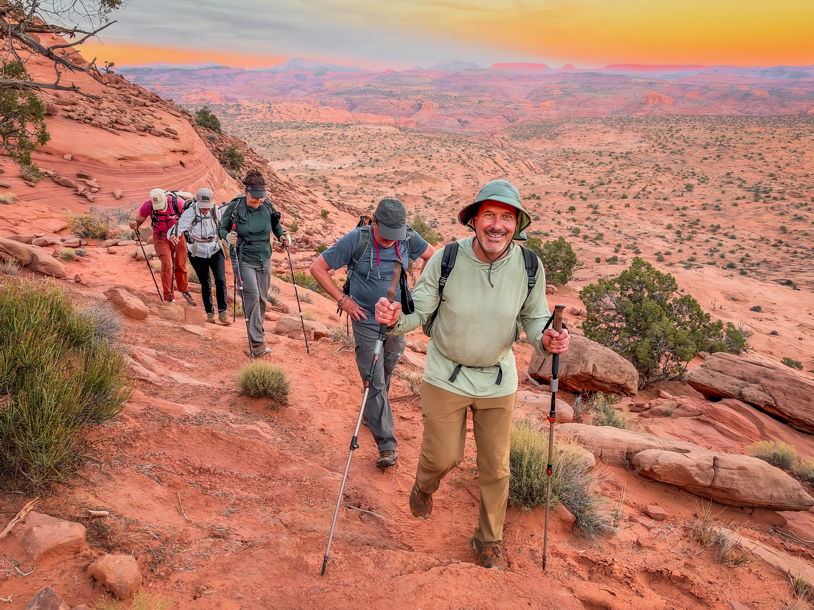
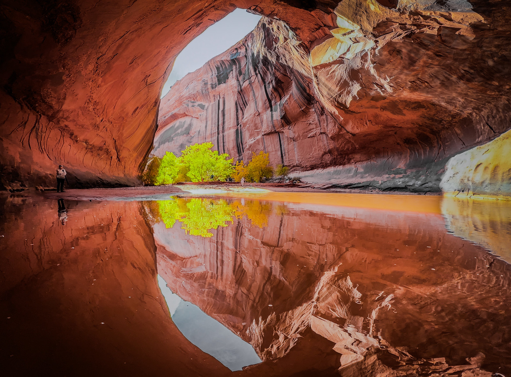
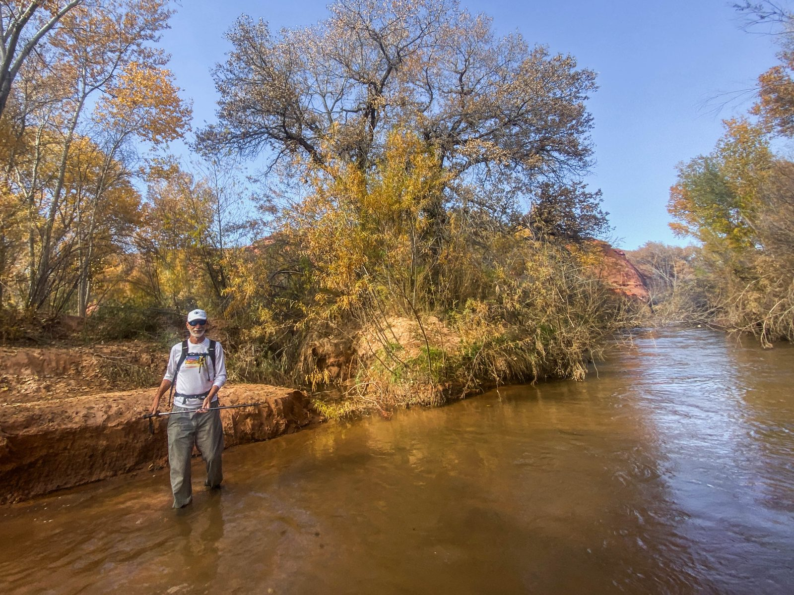
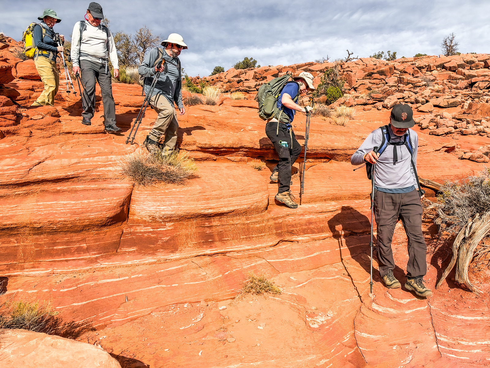
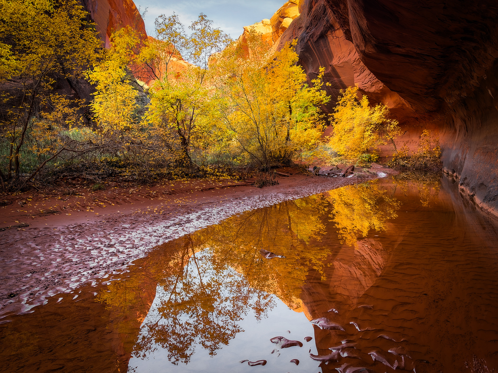
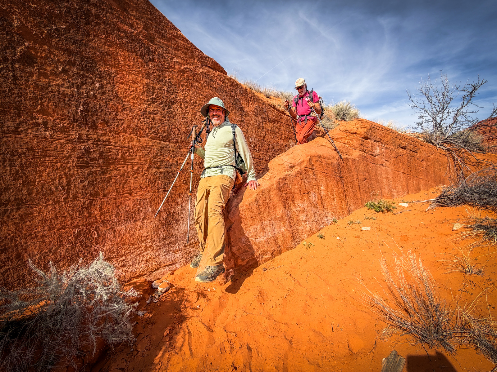
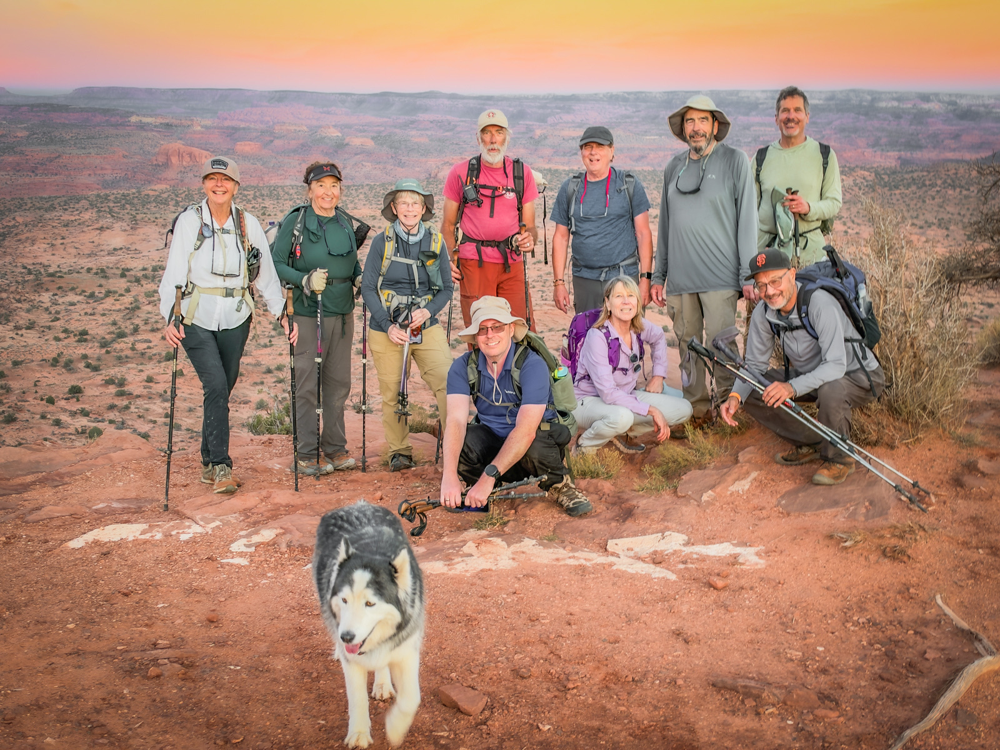
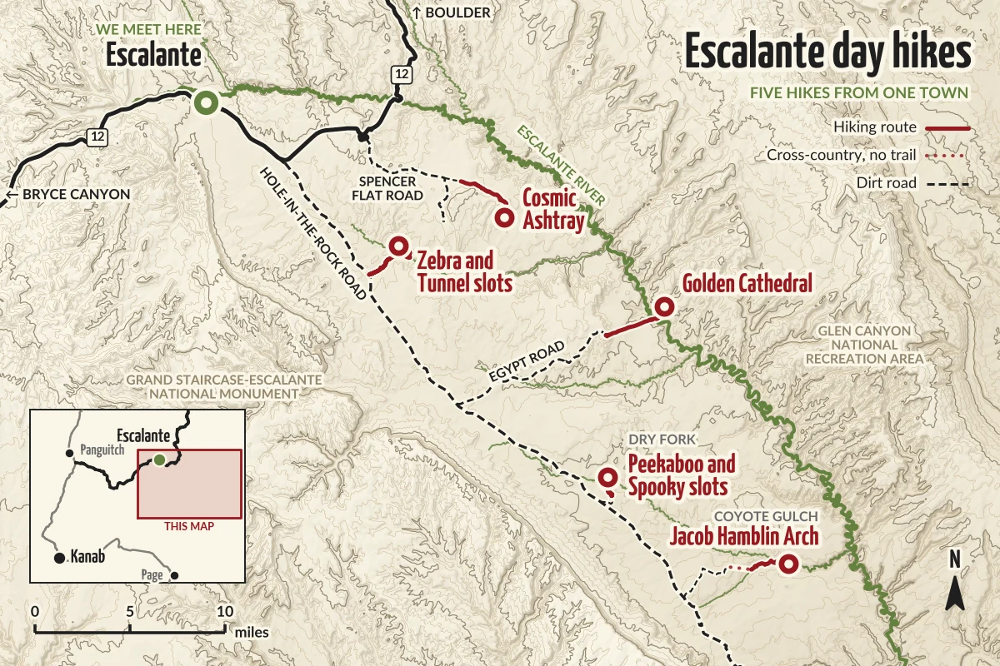
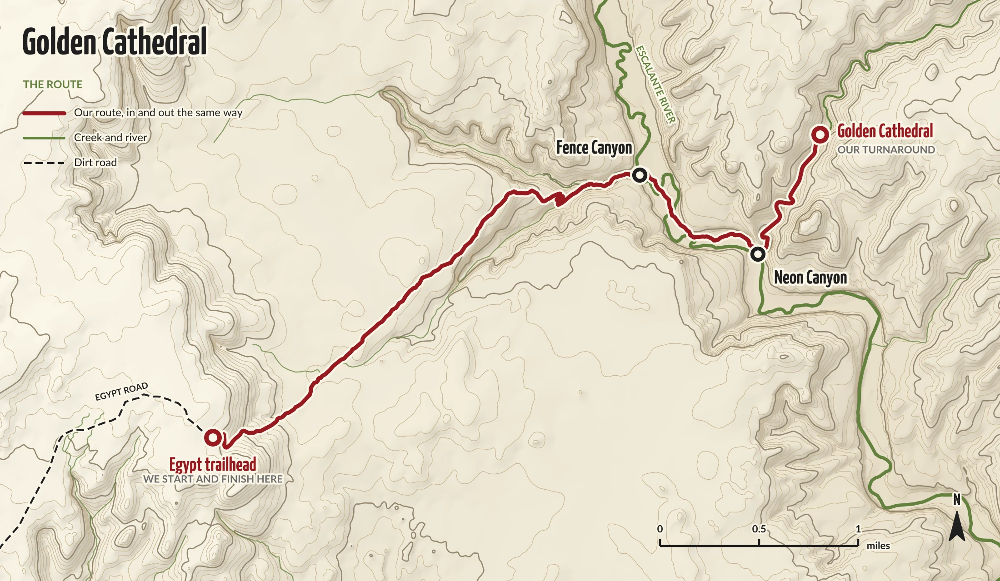
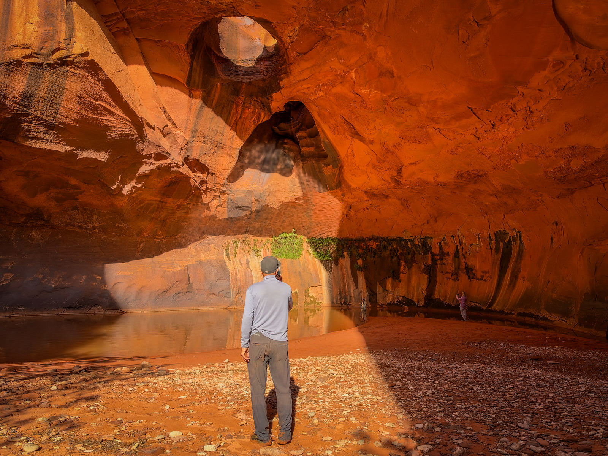

At the mouth of Neon Canyon the sandstone curls overhead into a huge domed alcove, and in places the roof has worn clean through. The openings work like skylights. Under them sits a quiet green pool, and when the sun climbs high enough to bounce off the water, the whole chamber lights up gold. It's the kind of place that goes quiet the moment you walk in.
Getting there is half of it: a drop down the slickrock, a stretch along the Escalante River with your feet in the water more than once, and a last mile up Neon Canyon. It isn't technical. No ropes, no swimming. It's a long day with real miles and some cold wading, and it's one of the bigger, tougher day hikes we guide.
The hike in brief. The Golden Cathedral is a guided day hike in the Escalante canyons of southern Utah. We walk about 10 miles* round trip from the Egypt trailhead: down slickrock to the Escalante River, across the river several times, and up Neon Canyon to the alcove. It's a 10 to 12 hour day from the town of Escalante, drive included. You can do it as one day of our five-day Escalante Extravaganza in spring or fall, or as part of a private Escalante trip of three to five days.




Is this hike for you?
If you're up for a full day on your feet and don't mind getting them wet, you'll love it.
- About 10 miles on slickrock, sand and river cobbles. The day opens with a steep slickrock descent off the Egypt bench, and that same slope is your climb out at the end, when your legs are tired.
- You'll wade the Escalante River several times. The crossings are wades, not swims: feet and shins mostly, sometimes up to your thighs. In spring and late fall that water is cold.
- It isn't technical. No ropes and no swimming. The canyoneers you may see rappelling into the Cathedral come in from above; we walk the canyon floor to the pool.
- There are no facilities once we leave the trucks, and it's a long way from anywhere.
- With the cold water and the miles, it's a day for adults and strong older teens.
This is a notch harder than the Cosmic Ashtray. Want a lighter day first? Look at Peekaboo and Spooky or Zebra and Tunnel. Not sure it's your kind of day? Call us at (801) 251-6036 and you'll get a straight answer.

The day
One long day, out and back the same way.
In town and on the roadOn foot
- 8:00 am*In Escalante
We meet in town, say hello and load into the trucks.
- The driveAbout 45 minutes
Hole-in-the-Rock Road, then a rough side road out to the Egypt trailhead.
- Down to the riverThe morning
A steep slickrock descent off the Egypt bench, then open desert down to the Escalante River.
- The riverFeet wet
We follow the Escalante and cross it several times. Shoes stay on, and trekking poles earn their keep.
- Neon CanyonAround midday
A last mile up the canyon to the Cathedral. We aim to be there when the light comes off the pool. Lunch, photos, and time to sit under the skylights while the light does its thing.
- The way backThe afternoon
Out the way we came. The climb back up the slickrock comes last. Save something for it.
- EveningBack in Escalante
A short drive, then dinner on your own in town. You'll have earned it.
Keep the evening free.
On our first trip, in November, we walked for more than seven hours and topped out on the rim at dusk. Don't plan a long drive for that night.

Where you're headed
Neon Canyon is a side canyon of the Escalante River, in the slickrock country between Bryce Canyon, Capitol Reef and Lake Powell.
We meet in the town of Escalante, on Scenic Byway 12. The Egypt trailhead is about 45 minutes away: down Hole-in-the-Rock Road, then a rough 4x4 side road. Your guides drive. From the rim we walk down to the river, follow it downstream and turn up Neon Canyon.



Two ways to do this hike
On the Extravaganza this is the Friday hike. On a private trip it's any day you like.
Scheduled, small group
Escalante Extravaganza
$299per person for this day. $269 a day when you book three or more days.
- Five hikes in five days, once in spring and once in fall
- Come for all five days or pick the ones you want
- Up to ten guests with two guides*
Your dates, your group
Private Escalante trip
From $1,575per group per day, for up to five people, on a five-day trip. $1,625 a day for three days.
- Three, four or five days
- You pick the hikes and the dates
- Your own guide and truck
This hike is new on our menu. We guided it for the first time in November 2026, for Dreamland's 25th anniversary, and came home wanting to bring more people.
What's included, and what you bring
In the price
- Two Dreamland guides for a group of up to ten*
- The drive from Escalante to the trailhead and back, in our trucks
- Snacks and plenty of water
- The natural history of the place as we walk, and help with your photos
- A first-aid kit and emergency communication
Not included
- Lunch*
- Your lodging in Escalante, and getting there
- Tips for your guides
- Sales tax and public land use fees
What to bring
- Shoes or boots you don't mind soaking, plus dry socks for after
- Layers. Mornings can be near freezing in early spring and late fall, and the river is cold.
- A daypack, and a dry bag for your camera or phone on the crossings
- Trekking poles. They help on the crossings and on the slickrock*
- Your lunch*
You'll get the full list when you book.
Questions guests ask
How deep is the river on the Golden Cathedral hike?
Usually somewhere between ankle and thigh deep. The crossings are wades, not swims, so it's mostly feet and shins that get wet. The Escalante can rise with rain, and cold water plus cold air is no joke, so your guides decide on the day whether the river is safe to cross.
Do I need ropes or canyoneering skills?
No. The deep water at the Cathedral is where canyoneers rappel in from above. Coming in on foot the way we do, you walk the canyon floor to the pool at the base of the alcove.
How hard is the Golden Cathedral hike?
It's strenuous: about 10 miles, a steep slickrock descent and climb, several cold river wades, and a 10 to 12 hour day from Escalante. It's the toughest of our five Escalante days*, a notch harder than the Cosmic Ashtray.
When is the light best in the Golden Cathedral?
The alcove glows when late-morning and midday light bounces off the pool, and that's when we're there. Bring a way to keep your camera dry on the crossings.
Can I do this hike without a guide?
Yes. Strong, experienced desert hikers with a real 4x4 do. What you get with us is the drive down a rough road, the route, somebody who makes the river call, and guides who can tell you what you're looking at.
Can I bring a drone?
No. Please leave it at home for this one.
What happens in bad weather?
Slot canyons, the river and the dirt roads all answer to the weather, and we make the weather calls. If conditions aren't safe, your guides will change the plan and find you something just as good. A change of plan for weather or safety isn't a reason for a refund. If we cancel your day, you get a full refund.
Is lunch included?
No. Snacks and plenty of water are on us. Bring your own lunch, or ask us about adding one of ours*.
How do I get to Escalante, and where do I stay?
Escalante is a small town on Scenic Byway 12, about a three-hour drive from Kanab*. Most guests drive or rent a car. Every hike starts and finishes in town, so you base yourself there for the days you join us. Lodging is yours to book: there are lodges, motels, cabins and campgrounds in and around town, and they fill up in spring and fall.
What does it cost to cancel?
Our day tour terms apply*. Cancel 30 days or more before your hike and the fee is 15%, or you can take a credit toward a future tour. From 11 to 30 days out it's 25%, from 10 days to 48 hours it's 35%, and inside 48 hours or for a no-show it's 100%. The full wording is on our policies page.
Ask an assistant about this trip
Talking it over with an AI assistant? These links open one with this page loaded and a question to start from*.
Golden Cathedral, with us
$299 per person as a single day on the Escalante Extravaganza, or part of a private trip.
The other Escalante days
- Peekaboo and Spooky
Slot canyon day
Peekaboo and Spooky
A shorter, highly sought-after slot-canyon pair. Lighter than the big days, and still physical.
4 to 6 miles · about 6 hours
See this hike Big hiking day
Golden Cathedral
A domed alcove with skylights in its roof and a green pool below. About 10 miles, with river wades.
About 10 miles · 10 to 12 hour day
You are hereBig hiking day
Cosmic Ashtray
A wind-carved bowl of orange sand in white slickrock, with a rock tower dead center. No trail in.
8 to 9 miles · about 9 hour day
See this hikeBig hiking day
Jacob Hamblin Arch
The giant arch in Coyote Gulch, as a non-technical day hike from Chimney Rock. Hardy terrain.
12 miles · full day
See this hikeSlot canyon day
Zebra and Tunnel
Another slot-canyon pair in the same range as Peekaboo and Spooky. Zebra is aptly named.
7 miles · about 6 hours
See this hike